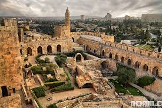

Israel, a land steeped in history and spirituality, beckons travelers and scholars alike with its blend of ancient mysteries and contemporary intrigue. Nestled at the crossroads of civilizations, this small yet culturally rich country offers a tapestry of enigmas waiting to be unraveled. From biblical sites to modern-day puzzles, let's embark on a journey through some of Israel's most captivating mysteries.
Perched atop a rugged plateau overlooking the Dead Sea, Masada stands as a symbol of Jewish resistance and resilience. The ancient fortress, built by King Herod the Great, became a last stronghold against Roman conquest in 73 CE. Its dramatic tale of defiance and tragedy culminated in a mass suicide of its Jewish defenders rather than surrender. Today, Masada's archaeological remains continue to stir debates among historians about the events that unfolded within its formidable walls and the enduring legacy of its inhabitants.
Jerusalem, revered by Jews, Christians, and Muslims alike, is a city layered with spiritual significance and historical intrigue. The Western Wall, a remnant of the Second Temple and Judaism's holiest site, draws pilgrims seeking connection to their heritage and prayers. Beneath the city's labyrinthine streets lie archaeological treasures that continue to unveil secrets from its ancient past. Yet, Jerusalem also stands as a modern-day focal point of geopolitical tension and cultural complexity, adding layers of contemporary mystery to its ancient allure.
In the fertile Jezreel Valley lies Tel Megiddo, an archaeological mound steeped in biblical lore and archaeological finds. Referred to in the Book of Revelation as Armageddon, Megiddo's strategic location has witnessed millennia of conquests and battles. Excavations have unearthed evidence of ancient civilizations and military installations, sparking theories about its role in biblical prophecy and its enigmatic connection to the end of days.
The Temple Mount in Jerusalem is a site of profound religious significance, housing the Dome of the Rock and the Al-Aqsa Mosque. Beneath its sacred grounds lie layers of history dating back thousands of years, including the ruins of the First and Second Jewish Temples. Archaeological excavations, constrained by political sensitivities, have revealed glimpses of ancient Jerusalem's grandeur and spiritual devotion, yet much of its mysteries remain buried, awaiting further exploration.
Beyond its ancient allure, Israel is a hub of technological innovation and modern mysteries. From cutting-edge research in medicine and cybersecurity to unexplained phenomena such as the Dead Sea's shrinking shoreline and the geological mysteries of the Ramon Crater, Israel continues to captivate with its blend of scientific achievement and natural wonders.
Israel's landscape is a tapestry woven with threads of ancient legends and contemporary enigmas. From the echoes of biblical narratives to the forefront of modern discovery, this land of contrasts invites exploration and contemplation. Whether delving into the archaeological depths of ancient sites or pondering the complexities of its modern-day challenges, Israel remains a beacon of mystery and discovery—a testament to the enduring allure of the unknown.
Join me as we journey through Israel's storied past and present, unraveling the mysteries that continue to shape its identity and captivate the imagination of the world.
Let the mysteries of Israel unfold before you, revealing the secrets that have fascinated scholars and adventurers through the ages.